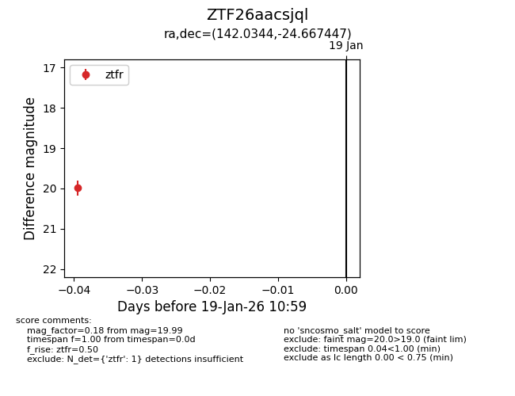
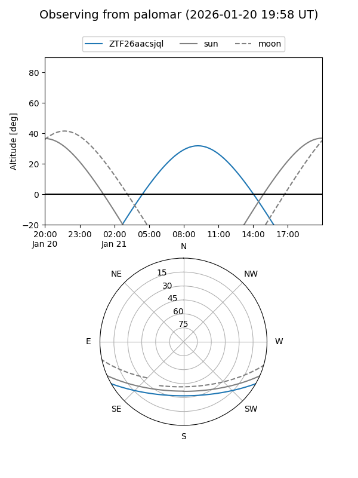
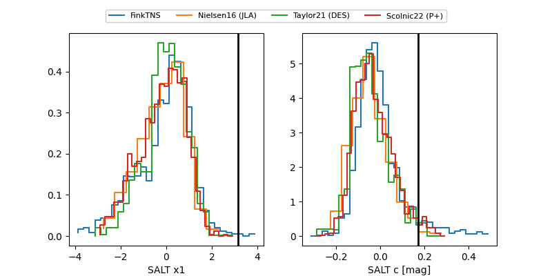

ZTF26aacsjql
Target ZTF26aacsjql at 2026-01-19 11:00
Aliases and brokers:
FINK: link
Lasair: link
ALeRCE: link
alt names
ZTF26aacsjql (ztf,fink_ztf)
Coordinates:
equatorial (ra, dec) = 142.0344,-24.66745
equatorial (HMS+DMS) = 09:28:08.27,-24:40:02.81
galactic (l, b) = (254.8815,+18.69854)
Flags:
Photometry:
last ztfr=19.99
1 ztfr detections
Lightcurve

Visibility


Additional plots
